  <a-scene>
    <a-assets>
        <!--  -->
                
        <!--  -->
        
        <!--  -->
        
        
        
        
        
    </a-assets>

    


                    
  <a-image   position="8 2.3 7" rotation="0 210 -3" src="#marca-cancha" width="2" height="1" [routerLink]="['/cancha']">
  </a-image>

  <a-image   position="-9 1.9 -5" rotation="0 60 -3" src="#marca-plaza" width="2.5" height="1.5" [routerLink]="['/entrada']">
  </a-image>

  <a-image   position="-9 1.9 6" rotation="0 160 -3" src="#marca-corredor" width="2.5" height="1.5" [routerLink]="['/corredor-principal']">
  </a-image>
  
  
  <!-- button to start visit stands  -->
  <a [routerLink]="['/experiencia-unica']" title="entrar" class="position btnoferta-ubicacion btn btn-warning px-3">Conoce nuestra oferta</a>
  <a class="position ctrl-ubicacion absolute px-3"  alt=""></a>

  <!-- 360-degree image. -->
  <a-sky id="image-360" radius="80" src="#fondo"
  animation__fade="property: components.material.material.color; type: color; from: #FFF; to: #000; dur: 300; startEvents: fade"
  animation__fadeback="property: components.material.material.color; type: color; from: #000; to: #FFF; dur: 300; startEvents: animationcomplete__fade"></a-sky>

  
   <!-- 
       The camera has a cursor component,
       which uses the mouse as the rayOrigin,
       so that you can click entities in the scene
       with the mouse.
  -->
  <a-entity id="camera" camera="userHeight: .2" position="0 2 0" rotation="0 89 -3" look-controls cursor="rayOrigin: mouse">
  </a-entity>
</a-scene>

